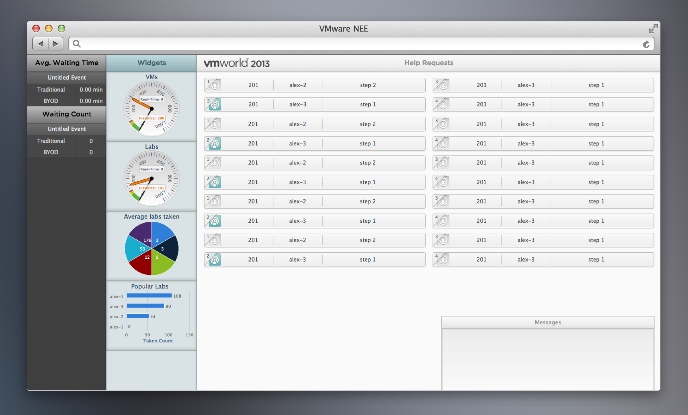

Background
This is a mobile web application that runs on all smartphones and tablets. It is mainly used for big learning event, where there are thousands of participants taking one of our hundreds of labs. There will be more than 100 lab-proctors walking around the hall to help people who "raise their hands" by clicking "request help" on their computer screens. Due to the amounts of participants, labs and proctors, a mobile app is needed in order to efficiently handles all requests.
Understand the problems and set up goals
1. Interview skateholders:
manager: want a solution to handle help request efficiently. There are different groups of labs with captain and proctors. Want to take a look at an arbitrary lab or staff
Proctors: want to know status of help requests; have a preference on request notification; want to see the issues as convenient as possible; want to find a specific lab quickly
Lab-takers: want to communicate with proctor more friendly
2. Create general workflow
Design Principle
1. Make the primary everywhere
Increase accessability of help requests
2. Satisfy proctors as much as we can
Customize notifications; see multiple lab groups at the same time; search feature
3. Promote casual interaction
Socialize the experience to improve communication
Information Architecture
Issues/Request: most primary, so the default page, in the middle (detail page needed)
Labs: to manage the selected labs, and view labs from different classifications (detail page needed)
Setting: need to connect the notification
Sketch & Prototype (Visual Design)
In general: navigation bar at bottom - easy to access; navigation banner at the top - reduce confusion/mistake
Gray as much as possible, highlight major information & reduce distraction
Simple skeumorphism to indicate clickability
Lab grouping: alignment - visual hierachy, affordance of clicking into next page
Edit: affordance of different modes (blue tag and blue background and partial blue background)
Help request view: mark the latest one as "On Route".
Cards style in detail page: separating different category of information with cards
Issue view
Proctor view
Complementary solution: proctor dashboard
